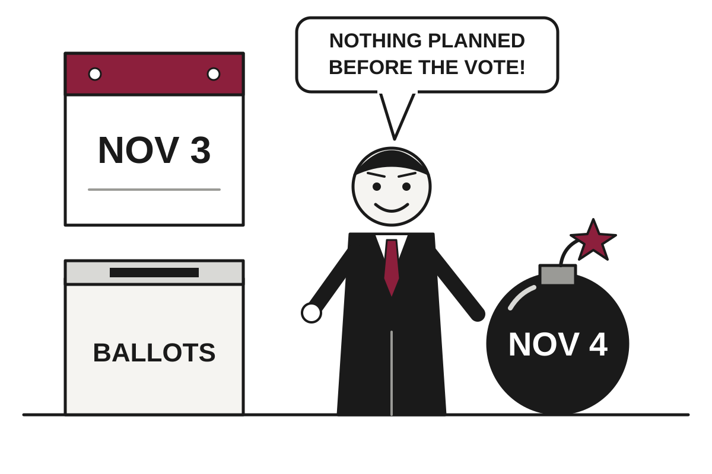

5 Things in 60 Seconds
- The U.S. and Israel have reportedly drawn up plans for a short, intensive strike on Iran's nuclear, energy and missile targets after the November 3 midterms, a timeline that is presumably a scheduling coincidence.
- Russia freed 74-year-old American Stephen Hubbard during envoy Steve Witkoff's visit, while Putin called the U.S. proposals lacking in substance, so the prisoner was the only thing that left the meeting finished.
- Houthi drone and missile attacks killed two people at Dammam's airport in Saudi Arabia and two more in the Eastern Province, suggesting the ceasefire was more of an intermission.
- Two critical PHP flaws, found with help from OpenAI and Google models, were patched after Amazon said they were already being broadly exploited, which is bad news for the large share of websites running PHP and the bars that host their dog photos.
- Brent crude rose 2.8% to $111.81 on reports of post-midterm U.S. strike plans on Iran, because markets will happily trade on a war that has not started yet.

U.S. and Israel Reportedly Schedule Iran Strike for Day After Voters Finish Having Opinions
Officials are said to be planning a short, intensive operation after the November 3 midterms, weeks after the president said no attack would come before them.
The wire said: U.S. and Israel are planning for a possible attack on Iran, source tells NPR · NPR World
The U.S. and Israel are preparing plans for a possible attack on Iran in early November, after the U.S. midterm elections, a person briefed on war planning told NPR. Iran said it is prepared. The timing is a coincidence in the way that a dentist appointment scheduled after your wedding photos is a coincidence.
The New York Times reported on Wednesday, citing senior U.S. officials, that the two countries have developed specific plans for a short but intensive operation. Targets would reportedly include nuclear facilities, energy infrastructure, and Iran's stockpile of missiles and drones. One official told the paper the aim would be to extract diplomatic concessions by further weakening Iran's economy. Translation: bombing as a negotiating technique, used when the negotiating has not produced any negotiating.
Geopolitics

Russia Frees Jailed American, Declines to Read Envoy's Peace Papers Closely
Putin released 74-year-old Stephen Hubbard during Steve Witkoff's ninth visit, then called the envoy's proposals lacking in substance and agreed to talks after November 10.
Russian President Vladimir Putin announced on Wednesday that Stephen Hubbard, a jailed American, had been released, doing so during talks in St. Petersburg with US special envoy Steve Witkoff. According to DW, Putin said Hubbard was already at the airport, and Witkoff said he was "going home to his family." NPR identified Hubbard as a 74-year-old Michigan native and said the release followed a request from President Trump. It is the rare diplomatic meeting in which the most concrete deliverable arrived before anyone sat down to discuss the actual war.
Hubbard was captured by Russian forces and convicted of being a mercenary, a charge he denies, and sentenced to seven years at a closed trial in 2024. Translation: a closed trial is one where the public is not invited, which tends to simplify the appeals process.
Alberta Votes 76% to Stay in Canada, Separatists Find Silver Lining in the Other 24%

Unofficial results show roughly three in four Albertans rejected starting a path to independence, and the separatists are already planning to remove the premier instead.
North Korea Prepares to Restart Border Loudspeakers, Reviving Sixteen-Month Pause in Shouting
Kim Yo-jong says the speakers will be ready within days along the whole border, while Seoul says any response would be 'proportional' but undecided.
Houthis Hit Saudi Airport, Proving Four-Year Ceasefire Was Mostly a Long Intermission

Two people died at Dammam's King Fahd International Airport, and two more died from drone debris in the oil-rich Eastern Province, as the Houthi-Saudi conflict widens.
Elsewhere on the wire
Police investigate Married at First Sight Australia after 'inappropriate' allegations BBC WorldReal Madrid’s complaint over La Liga chief’s Nazi slant sent to tribunal Al JazeeraControversial US-backed vaccine trial in African newborns halted The GuardianGreetings from the Brazil-Argentina border, where waterfalls are flowing at near-record rates NPR WorldAt least four dead after storm brings flooding to southern France BBC World16-year-old Malaysian student attacks his teacher with axe Al JazeeraAI

Anthropic Releases Claude Duet, an Assistant That Works While You Sleep and Asks Permission Before Spending
The research-preview app runs in the background on its own cloud computer, connects to more than 6,000 plugins, and will not move your money between accounts under any circumstances.
Anthropic has released a research preview of Claude Duet, an app in which an AI agent keeps working on tasks while the user is away, according to The Decoder and TechCrunch. It runs on iOS, Android and the web, is built on Claude Opus 5.5, and is open through a waitlist to Pro and Max subscribers in the US. Team and Enterprise plans are not included yet. The company has, in effect, built an employee that never leaves the office and is also not in the office.
The main difference from the regular Claude app is direction. In the chat app, you show up and ask for things. With Duet, The Decoder reported, the agent shows up first: a short morning summary of the important items from connected apps, then silence unless something needs attention. Translation: the assistant has moved from waiting by the phone to calling you.
US Bans DeepSeek From Federal Computers; Investors Respond With $15 Billion

Two days after Washington ordered civilian agencies to remove the Chinese AI lab's technology, Bloomberg reports DeepSeek raised about 100 billion yuan.
Google Cloud Adds OpenAI Models, Hosting Every Rival Its Own Gemini Team Fears

Google Cloud is now the only major provider offering Gemini, Claude and OpenAI models together, all billed on one invoice.
Meta Invents New Class of Shares to Pay for AI, Keep Control
The company will issue non-voting stock from 2027 to fund AI, acquisitions and employee pay, while capital spending guidance for this year tops out at $145 billion.
Elsewhere on the wire
Spotify’s current AI bet is about being the music service that agents choose TechCrunch AIOpenAI, Anthropic, and Nvidia had record lobbying quarters The Verge AIThe Download: computing’s next leap and permafrost’s climate threat MIT Technology ReviewRecursive shows first result of its AI-driven research process with Flint The DecoderMaking the case for context-aware AI MIT Technology ReviewAn AI agent in "Skynet mode" hijacks unprotected language models to launch self-sustaining cyberattacks The DecoderTechnology

EA Closes BioWare, Citing Desire to Align Talent With Opportunity by Removing Talent
The studio behind Mass Effect and Dragon Age is shut after more than three decades, as its newly private, debt-laden owner trims 400 jobs company-wide.
Electronic Arts has closed BioWare, the studio behind Mass Effect, Dragon Age, Neverwinter Nights and Star Wars: Knights of the Old Republic, according to Ars Technica. BioWare announced the news on social media Wednesday afternoon, saying that "after more than three decades of shared adventures, BioWare is closing and early development on the next Mass Effect project is ending." It is rare for a company to describe a shutdown as an adventure that has concluded, but it is a genre BioWare knows.
The announcement landed minutes after Bloomberg reported 400 job cuts across EA, including 50 at BioWare, citing a person familiar with the company's plans. Translation: the leak arrived first, and the official statement followed to confirm that the leak had been modest. Ars did not say what happens to the remaining staff beyond the 50 named in that report.
Hackers Commandeer 333 Tor Exit Nodes, Discover Reused Password Remains Internet's Most Reliable Exploit
Attackers redirected SSH traffic and tried to coax email into plaintext across hundreds of relays, according to a Tor volunteer's report, beginning with a password someone used twice.
Musk Reportedly Capped Ukraine's Starlink Speeds, Then Credited Trump With the Decision

The Wall Street Journal says Elon Musk personally ordered a 160 kph limit that hobbled Ukrainian drones, though both he and the president have denied it.
Google Cloud Restores London Region After Power Event Briefly Reminds Britain Where Its Money Lives

A power problem at one London data centre zone disrupted Revolut, Lloyds, Royal Mail, DPD and court video hearings before Google declared services restored.
Elsewhere on the wire
Forget "Malaise 2.0," GM says it's still all-in on EVs and autonomy Ars TechnicaTrump says Sundar Pichai talked him out of renaming the Atlantic Ocean The VergeWhat is PHP and why did it spark a global cyber-security scramble? BBC TechnologyGoogle cleared 300 hectares of Finnish forest Hacker NewsMicrosoft shuts down its beloved maker space The VergeZoe Kleinman: PHP is the cyber equivalent of an unexploded bomb BBC TechnologyMarkets & Economy

CoreWeave Stock Sinks as Investors Discover AI Clouds Come With Debt
The biggest neocloud has lost roughly two-thirds of its peak value, carries 15% yield debt, and awaits a rescue from its largest shareholder, who says none is needed.
CoreWeave shares are down 35% this month, according to CNBC, after an 8% drop on Thursday, leaving the company valued at about $31 billion. That compares with a peak of roughly $90 billion three months after its March IPO last year. Its unsecured bonds now yield about 15%, which is the market's way of saying it would like to be paid generously for its optimism.
Translation: a yield is the annual return a bond buyer demands, and when it climbs, borrowing gets more expensive for the issuer. CoreWeave's five-year credit default swaps, which are insurance against default, trade at 1,115 basis points, or 11.15%. Translation: a basis point is one hundredth of a percentage point, and 1,115 of them is what insurers charge when they have read the balance sheet.
The pain is not confined to one company. CNBC reported that Nebius is down 32% this month and IREN is down 39%. Australia's NextDC fell 40% in a day after cutting its earnings forecast, and Firmus scrapped its IPO citing market volatility. Nscale, which filed to list in New York last month, now has to decide whether to proceed. Investing.com reported that short sellers, who profit when stocks fall, are sitting on about $6 billion in unrealized gains.
Chip Stocks Slide as Investors Remember Memory Can Be Oversupplied, Briefly Forget Again
Tesla's lower spending target and Lam Research's weak forecast hit chipmakers on Thursday, while Nvidia's Jensen Huang said he sees no memory glut by 2029.
Central Banks Brace to Raise Rates Into Slumping Housing, Frozen Hiring, and Fuel Bills
UK inflation hit 3.5% and US housing data sank, yet markets still expect both central banks to hike, because prices are the problem that currently has a mandate.
American Airlines Posts Record Revenue, Still Expects to Lose Money, Blames Jet Fuel

The carrier widened its 2026 loss forecast to as much as $1.60 a share and will slow growth next year, as fuel costs swallowed the best sales in its history.
| Series | Last | Chg | Period | Trend |
|---|---|---|---|---|
| SPY | $764.95 | −1.05% | +2.34% | |
| Nasdaq | 26,702.86 | +1.05% | +3.35% | |
| VIX | 16.68 | −0.63 | +0.04 | |
| Brent crude | $115.22 | −3.03% | +32.45% | |
| Dollar index | 121.40 | −0.14% | +0.91% | |
| 2Y Treasury | 4.79% | +0.02 | +0.61 | |
| 10Y Treasury | 5.12% | −0.03 | +0.57 | |
| Fed Funds | 3.88% | ±0.00 | +0.25 | |
| CPI inflation (YoY) | 3.74% | +0.34 | +1.30 | |
| Unemployment | 4.20% | +0.10 | +0.10 |
Elsewhere on the wire
Meta stock sinks 6% as AI spend pushes free cash flow negative CNBC MarketsApex funding talks value satellite maker at $4 billion - Bloomberg Investing.comMusk's clash with Ukraine accelerates demand for Starlink alternatives. Few exist CNBC MarketsTrump's approval rating on economy hits all-time low as midterm looms: CNBC survey CNBC EconomyInvestors’ recent money moves show a preference for lowering risks over boosting rewards MarketWatchGucci’s sales drop 5% in third quarter as weak Chinese demand dampens turnaround hopes Investing.comPhoto credits
- Russia Frees Jailed American, Declines to Read Envoy's Peace Papers Closely: St. Petersburg's skyline (21152403441) by Jorge Láscar from Melbourne, Australia, CC BY 2.0, via Wikimedia Commons
- Alberta Votes 76% to Stay in Canada, Separatists Find Silver Lining in the Other 24%: Prairie Alberta by Zeitlupe, CC BY-SA 3.0, via Wikimedia Commons
- Houthis Hit Saudi Airport, Proving Four-Year Ceasefire Was Mostly a Long Intermission: Alejandro Velasco Astete International Airport - Terminal building by AgainErick, CC BY-SA 4.0, via Wikimedia Commons
- AI Finds 20-Year-Old PHP Flaw; Internet Asked to Unplug Itself Until Further Notice: Front of server racks at NERSC by Derrick Coetzee from Berkeley, CA, USA, CC0, via Wikimedia Commons
- Anthropic Releases Claude Duet, an Assistant That Works While You Sleep and Asks Permission Before Spending: Focused individual working on a laptop at a desk with a planner and smartphone in a cozy indoor setting by Shixart1985, CC BY 2.0, via Wikimedia Commons
- US Bans DeepSeek From Federal Computers; Investors Respond With $15 Billion: Front of server racks at NERSC by Derrick Coetzee from Berkeley, CA, USA, CC0, via Wikimedia Commons
- Google Cloud Adds OpenAI Models, Hosting Every Rival Its Own Gemini Team Fears: Data center infrastructure in the United States by DOE/National Renewable Energy Laboratory (NREL), Public domain, via Wikimedia Commons
- Meta Invents New Class of Shares to Pay for AI, Keep Control: Data center infrastructure in the United States by DOE/National Renewable Energy Laboratory (NREL), Public domain, via Wikimedia Commons
- Musk Confirms He Is Considering Merging His Two Trillion-Dollar Companies, Is Not on Committee Reviewing It: Sound suppression water system test at KSC Launch Pad 39A by NASA, Public domain, via Wikimedia Commons
- EA Closes BioWare, Citing Desire to Align Talent With Opportunity by Removing Talent: Nintendo-Switch-Pro-Controller-FL by Evan-Amos, Public domain, via Wikimedia Commons
- Hackers Commandeer 333 Tor Exit Nodes, Discover Reused Password Remains Internet's Most Reliable Exploit: Front of server racks at NERSC by Derrick Coetzee from Berkeley, CA, USA, CC0, via Wikimedia Commons
- Musk Reportedly Capped Ukraine's Starlink Speeds, Then Credited Trump With the Decision: Satellite dish in Austria by High Contrast, CC BY 3.0, via Wikimedia Commons
- Google Cloud Restores London Region After Power Event Briefly Reminds Britain Where Its Money Lives: Data centre by Earthranger, CC BY-SA 3.0, via Wikimedia Commons
- Oil Tops $111 as Washington Plans Iran Strikes After Voters Finish Voting: Blue hour fog over Preemraff oil refinery by Brofjorden by W.carter, CC BY-SA 4.0, via Wikimedia Commons
- CoreWeave Stock Sinks as Investors Discover AI Clouds Come With Debt: Datacenter Server Racks (22370909788) by Carl Lender from Sunrise, USA, CC BY 2.0, via Wikimedia Commons
- American Airlines Posts Record Revenue, Still Expects to Lose Money, Blames Jet Fuel: Gate A1 jet bridge at CVG Concourse A by Stinger20, CC BY-SA 4.0, via Wikimedia Commons